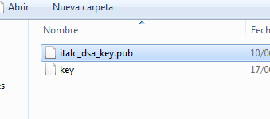

- Módulo: Fundamentos de hardware
- Título del trabajo Control remoto
- Componentes del grupo: Abel García García
- Curso Académico: 2013/2014
- Fecha de entrega: 1 de Enero de 2014
Instalar iTalc Master (Maestro) en un equipo GNU/Linux
En GNU/Linux la instalación de italc-master crea los siguientes ficheros:
- /etc/italc/keys/private/teacher/key
- /etc/italc/keys/public/teacher/key
Si las claves anteriores no existieran después de instalar el programa habrá que generarlas. Para crear las claves de iTalc ejecutamos el comando:
Creamos el grupo italc, y añadimos nuestro usuario por ejemplo "maul" al grupo:
- usermod maul --groups italc
Damos permisos al grupo italc, para tener acceso a las claves de italc:
- cd /etc/italc; chgrp -R italc keys
Verificar que el servicio a está iniciado: ps -ef |grep ica
Para que el servicio ica se inicie automáticamente al iniciar sesión con el usuario "nombre-usuario":
- Editar fichero /home/nombre-usuario/.profile
- Añadir "/usr/bin/ica &" al final del fichero.
- Instalar en GNU/Linux Debian (apt-get install italc-client)
- Copiar el fichero key del master directamente en /etc/italc/keys/public/teacher.
- Creamos el grupo italc, y añadimos nuestro usuario al grupo:
- addgroup italc
- usermod usuario --groups italc
- Damos permisos al grupo italc, para tener acceso a las claves de italc:
- cd /etc/italc; chgrp -R italc keys
- Verificar que el servicio está iniciado (ps -ef |grep ica)
- Para que el servicio ica se inicie automáticamente al iniciar sesión con el usuario "alumno"
- Editar fichero /home/alumno/.profile
- Añadir "/usr/bin/ica &" al final del fichero.
Instalar italc en Windows
- Tratar de instalar una versión de Italc cliente "similar" a la del master.
pero solo el cliente
- Asegurarse de que nuestro usuario de Windows tiene una clave NO vacía
- Copiar el fichero de clave pública del maestro para poder importarlo en los clientes.
- Cambiar el nombre del fichero de clave pública del master, por el de "italc_dsa_key.pub". Este cambio es para facilitar la localización del fichero ya que la herramienta en windows busca un fichero con extensión ".pub".

- Reiniciar el programa
- Cuando voy a conectar el master con el cliente windows me da un error de autentificación